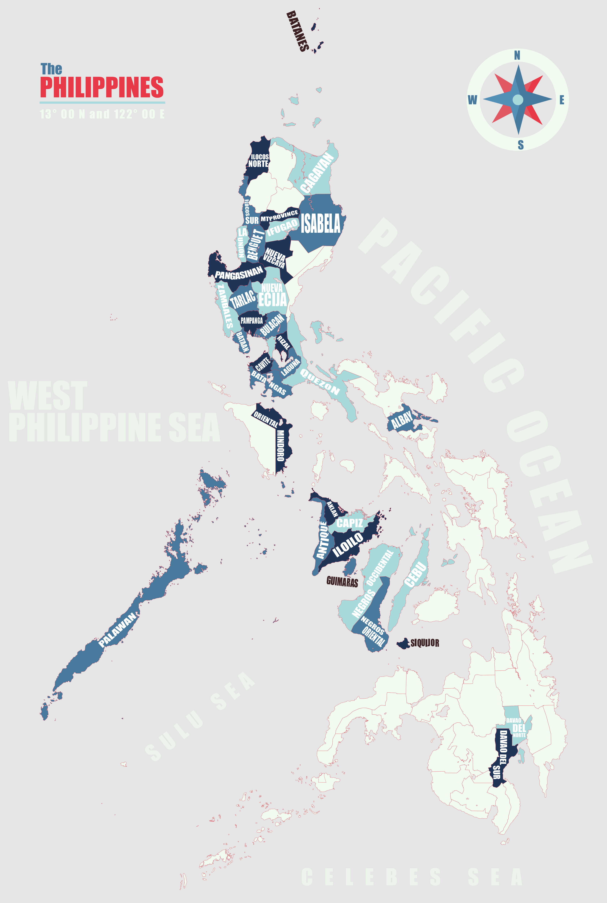

Technical Engineer
IT Services 💻
June 2008 to May 2012
I started my career as a Technical Engineer for a local IT service company. I was part of the Service department responsible for providing phone, e-mail and on-site technical support to external clients. I was exposed to different IT products and solutions for SMEs and large enterprises. I was given the opportunity to improve my skills and be familiarized with different technologies by attending trainings, product launches, and bootcamps. It was overwhelming but incredibly fun. I was assigned as the SME for Storage and Backup solutions.
IT Consultant
Manufacturing 🏭
August 2008 to February 2012
While working as a Technical Engineer, my manager assigned me to one of our clients as an in-house IT Consultant. The client was a global manufacturing company where I managed their local network and Active Directory infrastructure. I handled several projects where I worked closely with my counterparts abroad, vendors and external groups. From time to time, I also trained the users in IT trends and security.
Systems Administrator
Oil and Energy 🛢
May 2012 to January 2014
I was hired as a System Administrator for a multinational oil and energy company. It was my most engaging and challenging so far. Apart from my daily task administering the IT infrastructure, I worked on several high-level projects like Active Directory deployment, MS Exchange migration, file server design, disk and file encryption, deployment of client management system, and designing the IT service desk portal.
IT Security - IAM
Financial Services 🏦
January 2014 to March 2022
As I progress my career, I was hired at one of the largest investment companies under Identity and Cybersecurity. I'm part of the global team responsible for access control and identity lifecycle. This also involves user access management, privilege access management, participating in ongoing security reviews and audits, reviewing and improving UAM processes, process writing and documentation, and advising and educating the business on security standards and policies.
For my complete professional profile, you can check my LinkedIn account.
A little more about me
Personal Bio
Here’s a brief history of who I am: I grew up in a small town (now a city) called Alaminos, Pangasinan, located 4 hours away from Manila. I was raised by my grandparents. Our house was surrounded by fruit trees and rice fields. It was a very laid back and simple place where malls, cinemas, and bars were non-existent. I lived there until I finished grade school. I moved to Caloocan City and joined my parents and siblings to continue my high school studies. During my second year, my parents bought us a personal computer, a Pentium 4, Windows XP machine. That's how I first got interested in computers. I attended Colegio de San Juan de Letran in Manila where I took up BS in Information Technology. After graduation, I landed a job at a local IT service company. Since then, I have been employed as an IT professional.
When I am not glued to a computer screen, I spend my time reading books, watching films, and listening to music and audio books. Whenever I am not busy, I play badminton and bowling, go to the gym or travel and have foodtrips with friends and colleagues.
Life is short and the world is wide...
Since I was a kid, I dreamed of a life full adventure and exploration. I enjoy watching adventure films, travel shows and I like reading geography books. I would memorized capital cities of every country, their flags and location on the map. I love traveling. It is the best way to spend your money providing you experiences and memories. Sometimes, it teaches you about life, perseverance, and it helps you realize how strong you are. It helps you build self-confidence and in making decisions in an unexpected situations. It gives you a sense of freedom and accomplishment. And it encourages you to be more creative and resourceful.
Project 82
One of my travel goals is to visit all the 82 provinces in my country to experience the richness of our culture, language, food and arts and to witness how diverse we are. So far, I have been to 36 provinces. 🌴 I've created a page to track my progress here: mlbas.co/project82
Travel Vlogs
I'm currently maintaining a channel on Youtube for my travel videos. Check out how I capture amazing sights and treasure unforgettable experiences. These are my ultimate souvenirs. These are the stories of my incredible trips. Enjoy! ☺️
Where I have been... so far
Of course, my ultimate goal is to ✈️ travel around the world, learn different languages, and taste every country's best cuisines. My first travel abroad was in 2016. I have been to 9 countries and territories in 3 continents and I'm hoping to visit more in the future.
Stay in touch
Contact me
Do you have questions? Want to talk about your next project? Or do you have information you want to share? If you like what you see, please get in touch, I'd love to hear from you.
Contact me here at: mlbas.co/contactme
I will respond to you as soon as possible. If you have not received my reply, try checking your junk and spam folders. Sometimes email end up in these folders.
NOTE: My mailbox does not accept e-mail containing zip and other archive file formats. Please attach the files as is.
Where else to find me